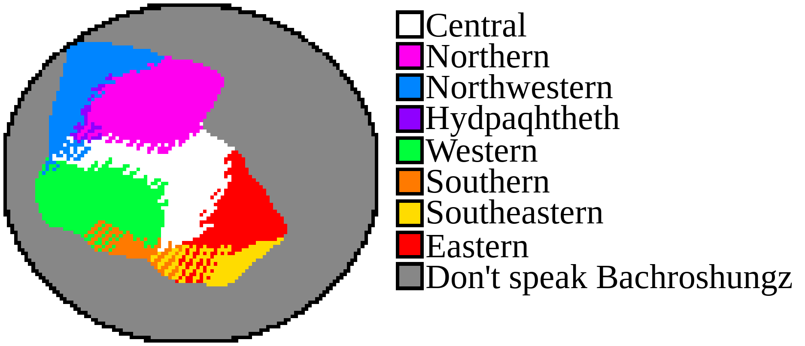

There are 8 Bakhroshungz dialects:
Central, Northern, Northwestern, Hüdpaqhtheth (meaning: Border-part), Western, Southern, Southeastern, and Eastern.
The rest of the pages, as disclaimed in the starting page, describe the Central dialect.
This page describes the other dialects in comparison to the Central dialect.
Here is a map of Bakhroshungz dialects and where they are spoken:
